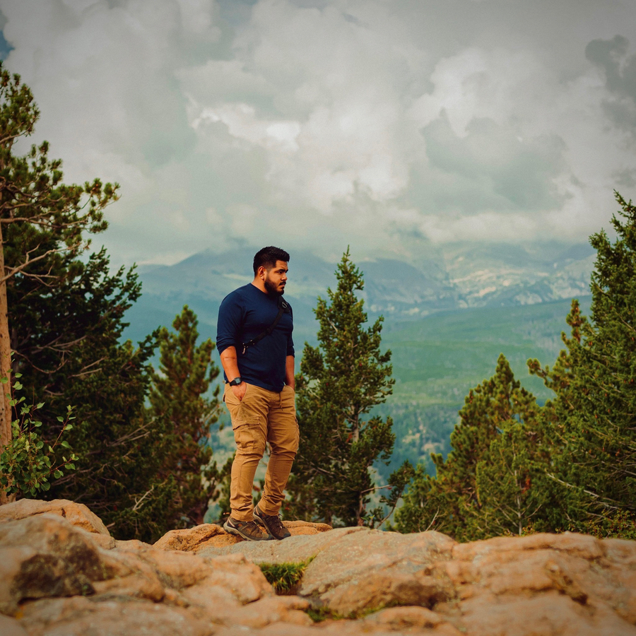

About

Hello, I'm Leo, a 30-year-old photographer living in Nebraska, and my love for national parks knows no bounds. These protected havens of natural beauty have always held a special place in my heart. The allure of wide-open spaces, breathtaking landscapes, and the opportunity to witness the wonders of wildlife in their natural habitat has drawn me to these pristine sanctuaries. National parks offer a chance to disconnect from the daily grind and reconnect with the wonders of our planet. Their serene beauty and ecological importance make them not just destinations but also a reminder of our responsibility to conserve and cherish these treasures for future generations.